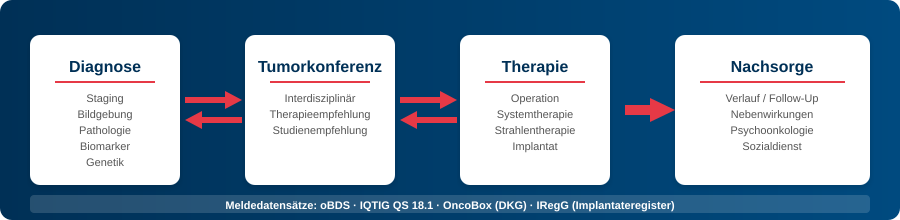

Kerndatensatz Senologie - Local Development build (v0.10.0) built by the FHIR (HL7® FHIR® Standard) Build Tools. See the Directory of published versions
Home
| Official URL: https://www.senologie.org/fhir/ImplementationGuide/kds-senologie | Version: 0.10.0 | |||
| Draft as of 2026-10-12 | Computable Name: SenologieKDS | |||
Core Dataset Senology (Kerndatensatz Senologie)
The Core Dataset Senology defines FHIR profiles for the structured documentation of breast cancer care at certified breast centres (Brustzentren) and beyond. It covers the entire care pathway from initial presentation through diagnostics, treatment, and follow-up to longitudinal documentation.

Who is this IG for?
| Audience | What will I find here? | Starting point |
|---|---|---|
| Clinicians | Which data are captured, which terminologies are used | Data Model, Test Patients |
| IT / Developers | FHIR profiles, questionnaires, extraction, technical interfaces | Profiles, Artifacts |
| Quality Assurance | Derivation of reporting datasets (oBDS, IQTIG, OncoBox, IRegG) | Use Cases |
| Researchers | Secondary use, terminologies, interoperability | Terminology, Data Model |
Care Pathway (Versorgungspfad)
The dataset maps the clinical workflow of senology across the following domains:
| Domain | Description | Profiles |
|---|---|---|
| Diagnosis | Initial diagnosis, recurrence, staging (cTNM), laterality | Diagnosis |
| Diagnostics | Imaging (mammography, ultrasound, MRI), pathology, biomarkers | Imaging, Pathology |
| Therapy | Surgery, systemic therapy, radiotherapy | Surgery, Systemic Therapy |
| Tumour Board (Tumorkonferenz) | Treatment recommendations, clinical disciplines | Tumour Board |
| Follow-up (Nachsorge) | Disease course, vital status, recurrence monitoring | Follow-Up |
The detailed FHIR resource model is available under Data Model.
Objectives
- Standardised capture of clinical data along the breast cancer (Mammakarzinom) care pathway
- Interoperable data exchange between clinical systems, cancer registries, and research databases based on HL7 FHIR
- Secondary use of care data for quality assurance, health services research, and clinical trials
Classification
The Core Dataset uses existing MII Core Dataset profiles as its technical foundation, but is an independent dataset — not an MII module. Technical implementation is carried out by the Berlin Institute of Health at Charité (BIH); content alignment is coordinated with the Deutsche Gesellschaft für Senologie (DGS), the Deutsche Gesellschaft für Gynäkologie und Geburtshilfe (DGGG), and the Arbeitsgemeinschaft Gynäkologische Onkologie (AGO).
Design Principle: Form-First (Formular-First)
Data capture is performed via SDC Questionnaires aligned with the clinical workflow. In the background, form data are transformed into FHIR resources via template-based extraction. See Data Capture.
Dependencies
| Technical (FHIR packages) | |
|---|---|
| MII Oncology | Diagnosis, surgery, systemic therapy, radiotherapy |
| MII Pathology | Pathology report, specimen |
| MII Imaging | Tumour localisation (BodyStructure) |
| ISiK | Base profile compatibility |
| HL7 SDC | Form-based data capture |
| Content (standards & guidelines) | |
| S3 Guideline Breast Cancer (S3-Leitlinie Mammakarzinom) | Clinical recommendations (AWMF 032-045OL) |
| oBDS | Oncological Core Dataset (Onkologischer Basisdatensatz) — cancer registry reporting |
| IQTIG QS 18/1 | External inpatient quality assurance for breast surgery |
| DKG Certification | Quality indicators for breast centres (OncoBox) |
| IRegG | Implant register reporting obligation |
Overview
- Data Model — Logical model, resource model, and FHIR mapping
- Profiles — All FHIR profiles in detail
- Test Patients — Two end-to-end example cases (curative + palliative)
- Use Cases — Capture, exchange, analysis, reporting datasets
- Terminology — ValueSets, CodeSystems, ConceptMaps
- Open Questions — Ballot questions for comment
- Artifacts — All FHIR artifacts
Planned Future Developments
- Implant Register Reporting (IRegG) — StructureMaps for automatic derivation of implant register data
- CQL-based Quality Indicators — Formal definition of DKG metrics as CQL Measures
- Synthetic Test Cohort — Rule-based generated test data (100 patients) for SQL on FHIR and CQL
- PRO Integration — PRO-CTCAE and EORTC QLQ-BR23/BR45/BR42 for patient-reported outcomes